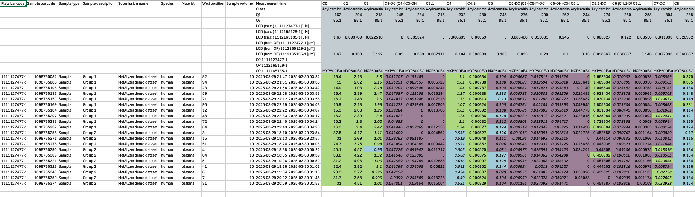

An R Package to read and analyze WebIDQ™ output
The package provides methods to read output files from the WebIDQ™ software into R. Metabolomics data is read and reformatted into an S4 object for convenient data handling, statistics and downstream analysis.
Install
There is a version available on CRAN.
install.packages("MetAlyzer")For the latest version install from GitHub
library(devtools)
install_github("Lu-Group-UKHD/MetAlyzer")Quickstart
The package takes metabolomic measurements and the quantification status (e.g. “Valid”, “LOQ”, “LOD”) as “.xlsx” files generated from the WebIDQ™ software. Additionally, meta data for each sample can be provided for further analysis.
This is an extract from one of the provided example data sets. 
Create MetAlyzer object:
> metalyzer_se <- MetAlyzer::read_webidq(file_path = load_demodata_biocrates())
_____ ______ _______ _________ ________ ___ ___ ___ ________ _______ ________
|\ _ \ _ \|\ ___ \|\___ ___\\ __ \|\ \ |\ \ / /|\_____ \|\ ___ \ |\ __ \
\ \ \\\__\ \ \ \ __/\|___ \ \_\ \ \|\ \ \ \ \ \ \/ / /\|___/ /\ \ __/|\ \ \|\ \
\ \ \\|__| \ \ \ \_|/__ \ \ \ \ \ __ \ \ \ \ \ / / / / /\ \ \_|/_\ \ _ _\
\ \ \ \ \ \ \ \_|\ \ \ \ \ \ \ \ \ \ \ \____ \/ / / / /_/__\ \ \_|\ \ \ \\ \|
\ \__\ \ \__\ \_______\ \ \__\ \ \__\ \__\ \_______\__/ / / |\________\ \_______\ \__\\ _\
\|__| \|__|\|_______| \|__| \|__|\|__|\|_______|\____/ / \|_______|\|_______|\|__|\|__|
\|____|/
Info: Reading color code "FFCBD2D7" as "#CBD2D7"
Info: Reading color code "FFB2D1DC" as "#B2D1DC"
Info: Reading color code "FF7FB2C5" as "#7FB2C5"
Info: Reading color code "FFB9DE83" as "#B9DE83"
Info: Reading color code "FFB9DE83" as "#B9DE83"
Info: Reading color code "FFFFF099" as "#FFF099"
Info: Reading color code "FFFFF099" as "#FFF099"
Info: Reading color code "FFA28BA3" as "#A28BA3"
Info: Reading color code "FFA28BA3" as "#A28BA3"
Info: Reading color code "FFB2D1DC" as "#B2D1DC"
Info: Reading color code "FF7FB2C5" as "#7FB2C5"
Measured concentration values:
------------------------------
0% 25% 50% 75% 100%
0.000000 0.286299 1.289381 6.308854 12522.000000
NAs: 762 (3.74%)
Measured quantification status:
-------------------------------
Valid: 15419 (75.66%)
LOQ: 983 (4.82%)
LOD: 3978 (19.52%)
NAs: 0 (0%)Visualizations:
The plotting functions plot_log2FC and plot_network can accept a standard data frame containing log2FC results, and a stat column.
diffres_df <- readRDS(MetAlyzer::toy_diffres())
network <- MetAlyzer::plot_network(
diffres_df,
q_value = 0.05,
metabolite_col = "Metabolite",
values_col_name = "log2FC",
stat_col_name = "qval",
metabolite_text_size = 2,
connection_width = 0.75,
pathway_text_size = 4,
pathway_width = 4,
)
network$Plot
Detailed instructions
For a comprehensive tutorial, please check out the MetAlyzer Vignettes.
Please also check out MetAlyzer on CRAN.